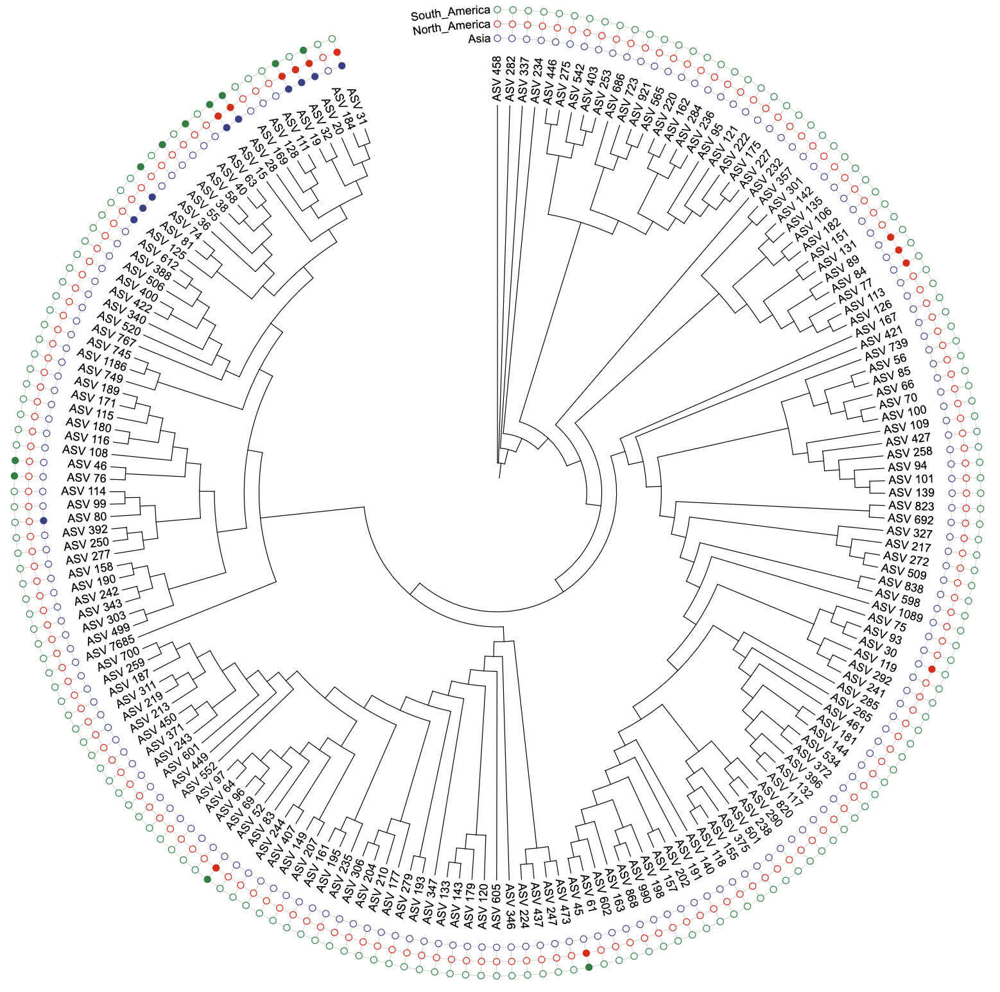
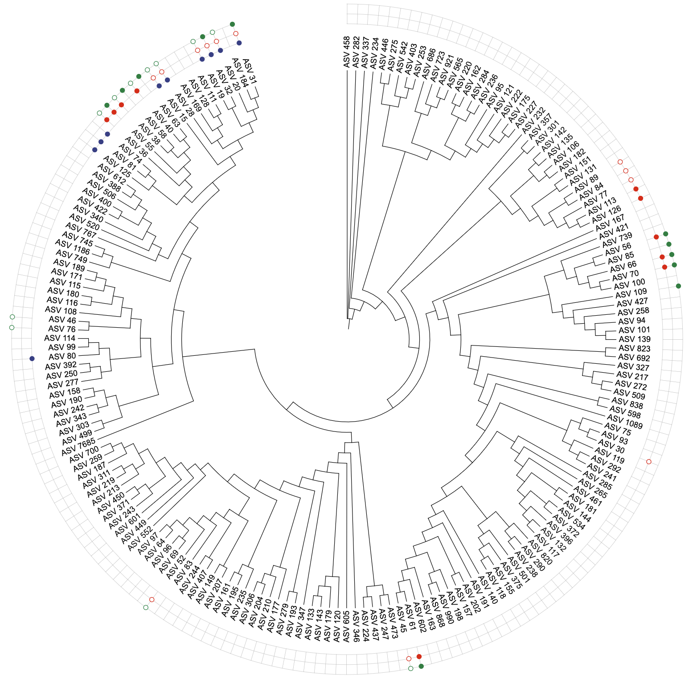
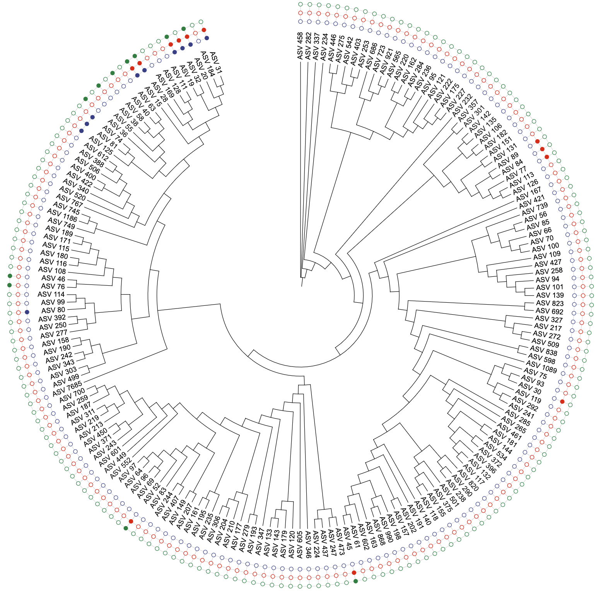
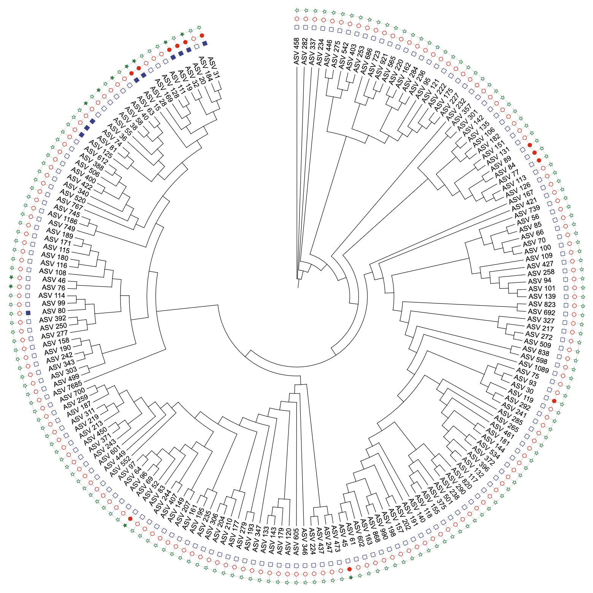
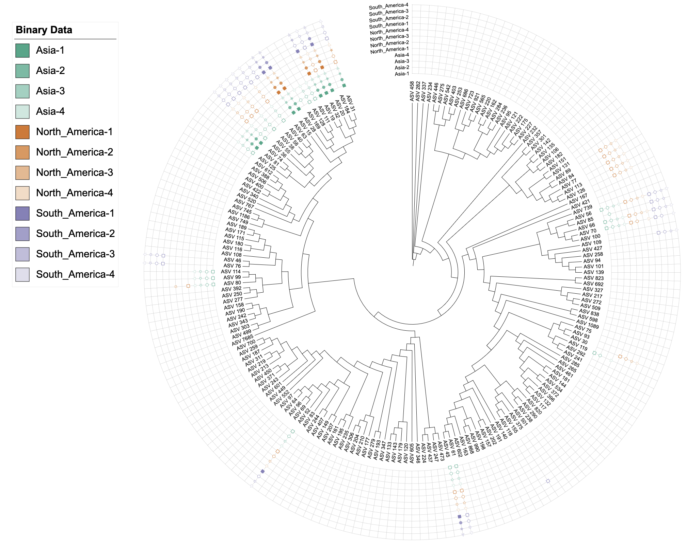
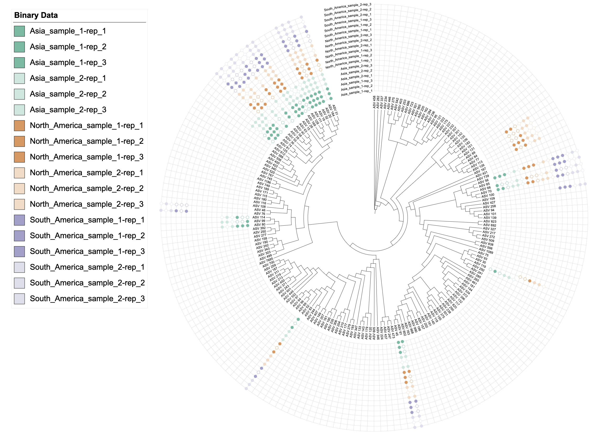
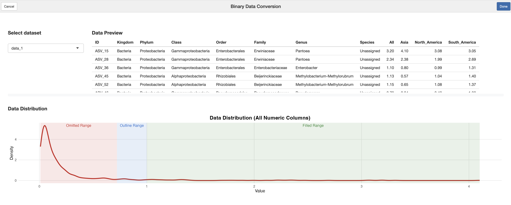
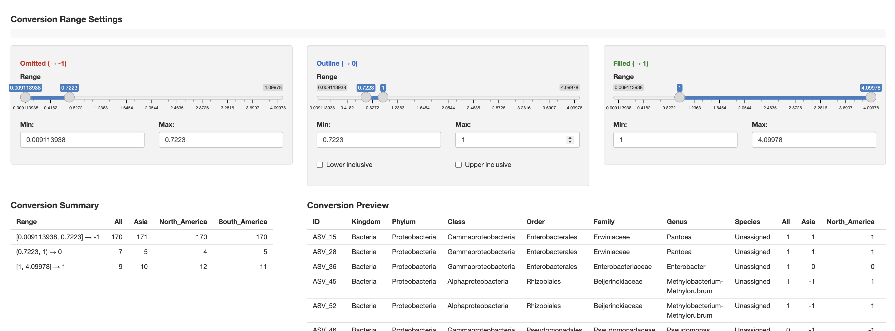
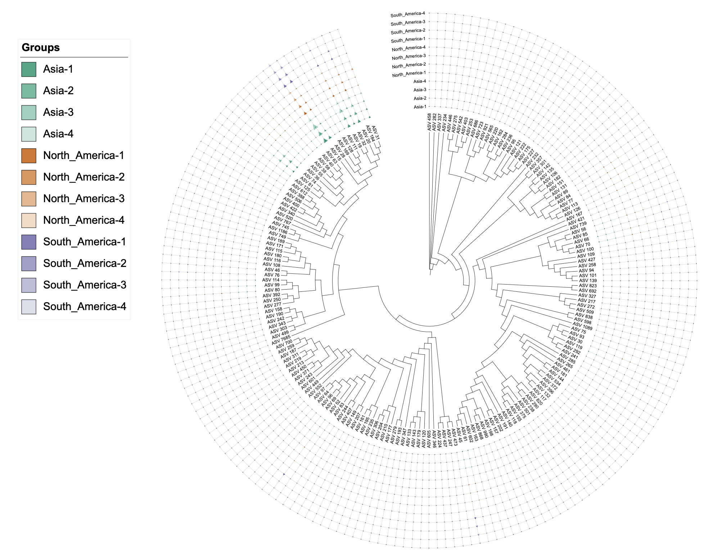
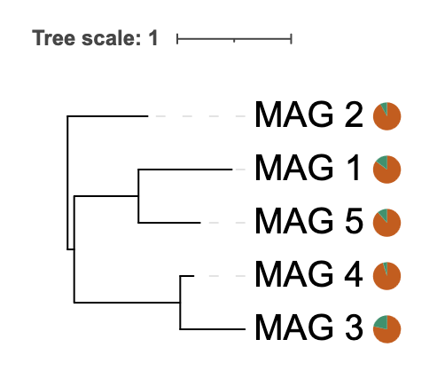

v1.2.2
Tong Zhou
2025-11-03
v1.2.2.RmdOverview
The itol.toolkit package version 1.2.2 continues the
evolution of dual-factor coloring capabilities, extending support to
additional template types and enhancing existing functionality. This
version also includes important bug fixes for pie chart
functionality.
Updates:
-
Added:
DATASET_BINARYnow supports third element color palette specification in dual-factor coloring. - Added: Flexible separator syntax for attribute-based dual-factor coloring - support any string as separator (single/multi-character, special regex characters).
-
Added:
DATASET_BINARYnow features flexible data conversion with a standaloneconvert_to_binary()function for precise control over binary data transformation. -
Added: Interactive RStudio Addin
binary_data_conversionprovides an intuitive graphical interface for binary data conversion with real-time preview and range controls. -
Added:
DATASET_EXTERNALSHAPEnow supports dual-factor coloring (main group + gradient) with customizable color palettes. -
Fixed:
DATASET_PIECHARTnow supports single-column data input with intelligent range detection and automatic pie segment generation.
1. DATASET_BINARY Enhanced Dual-Factor Coloring
Building upon the existing dual-factor coloring functionality in
DATASET_BINARY, v1.2.2 introduces flexible
separator syntax - the major innovation that allows any string
to be used as a separator for grouping technical replicates. This
version also adds support for specifying custom color palettes as the
third element in the color parameter, and improved shape
parameter control for independent shape assignment.
Available dual-factor coloring approaches:
-
Color-color dual-factor:
color = c("main_factor", "gradient_factor")- Two color columns for dual-factor coloring -
Color-color dual-factor with custom palette:
color = c("main_factor", "gradient_factor", "palette_name")- Custom color palette support -
Attribute-based coloring with separator:
color = c("attr_name", "separator", "palette_name")- Group technical replicates by separator in column names (separator can be any string, e.g., “-”, “_“,”sample”, “_rep”, etc.) -
Shape-color dual-factor:
color = "gradient_factor", shape = "main_factor"- Independent shape and color control
Basic dual-factor coloring (existing functionality)
library(itol.toolkit)
library(dplyr)
library(data.table)
# Load dataset4
tree_1 <- system.file("extdata","dataset4/otus.contree",package = "itol.toolkit")
data_file_1 <- system.file("extdata","dataset4/annotation.txt",package = "itol.toolkit")
data_1 <- data.table::fread(data_file_1)
# Select data columns
# Note: Manual conversion shown here for demonstration
# In v1.2.2+, automatic conversion is available (see Section 3)
data_original <- data_1 %>%
select(ID, Asia, North_America, South_America)
data_binary <- data_original %>%
mutate(
Asia = case_when(
Asia >= 1 ~ 1,
Asia < 1 ~ 0,
Asia == 0 ~ -1
),
North_America = case_when(
North_America >= 1 ~ 1,
North_America < 1 ~ 0,
North_America == 0 ~ -1
),
South_America = case_when(
South_America >= 1 ~ 1,
South_America < 1 ~ 0,
South_America == 0 ~ -1
)
)
# Create unit with single-factor coloring after manuly covert binary data
u_binary_original <- create_unit(
data = data_binary,
key = "BINARY_original",
type = "DATASET_BINARY",
color = "aaas",
tree = tree_1
)
write_unit(u_binary_original)
# Create unit with single-factor coloring by auto covert binary data
u_binary_coverted <- create_unit(
data = data_original,
key = "BINARY_converted",
type = "DATASET_BINARY",
color = "aaas",
method = "binary",
tree = tree_1
)
write_unit(u_binary_coverted)
# Create unit with single-factor coloring by 2 step method covert binary data
data_binary_2steps <- convert_to_binary(
data_original,
negative_range = c(0, 0),
zero_range = c(0, 1),
positive_range = c(1, Inf),
lower_inclusive = FALSE,
upper_inclusive = FALSE,
auto_detect = FALSE,
verbose = TRUE
)
u_binary_covert_2steps <- create_unit(
data = data_binary_2steps,
key = "BINARY_convert_2steps",
type = "DATASET_BINARY",
color = "aaas",
tree = tree_1
)
write_unit(u_binary_covert_2steps)
# Create unit with shapes
data_binary <- anno_col_group(data_binary, list(
Asia = "Asia",
North_America = "North_America",
South_America = "South_America"),
attr_name = "shape")
u_binary_shapes <- create_unit(
data = data_binary,
key = "BINARY_shapes",
type = "DATASET_BINARY",
color = "aaas",
shape = "shape",
tree = tree_1
)
write_unit(u_binary_shapes)
Simulated binary data demonstration with group-based shapes
# Function to generate fluctuating columns for demonstration
generate_fluctuation_columns <- function(df, base_col, num_cols, fluctuation_range, separator = "-", hierarchical = FALSE, num_samples = NULL) {
set.seed(123) # Ensure reproducible results
if(hierarchical && !is.null(num_samples)){
# Hierarchical naming: base_col_sample_#-rep_#
for (sample in 1:num_samples) {
for (rep in 1:num_cols) {
col_name <- paste0(base_col, "_sample_", sample, separator, rep)
df[[col_name]] <- df[[base_col]] * (1 + runif(nrow(df), -fluctuation_range, fluctuation_range))
}
}
} else {
# Simple naming: base_col-separator-#
for (i in 1:num_cols) {
col_name <- paste0(base_col, separator, i)
df[[col_name]] <- df[[base_col]] * (1 + runif(nrow(df), -fluctuation_range, fluctuation_range))
}
}
return(df)
}
# Prepare data for binary visualization
# Select relevant columns and generate multiple samples
data_3 <- data_1 %>% select(ID, Asia, North_America, South_America)
# Generate 4 columns for each region with ±15% fluctuation
data_3 <- generate_fluctuation_columns(data_3, "Asia", 4, 0.15)
data_3 <- generate_fluctuation_columns(data_3, "North_America", 4, 0.15)
data_3 <- generate_fluctuation_columns(data_3, "South_America", 4, 0.15)
# Round numeric values for cleaner visualization
data_3[, 2:ncol(data_3)] <- round(data_3[, 2:ncol(data_3)])
# Binary data conversion
data_3_binary <- convert_to_binary(
data = data_3,
force_convert = FALSE,
verbose = TRUE,
negative_range = c(0, 0),
zero_range = c(0, 1),
positive_range = c(1, 5),
lower_inclusive = FALSE,
upper_inclusive = TRUE,
auto_detect = FALSE
)
# Add column group annotations using regular expressions
data_3_binary <- anno_col_group(data_3_binary, list(
Asia = "^Asia",
North_America = "^North_America",
South_America = "^South_America"),
attr_name = "color"
)
data_3_binary <- anno_col_group(data_3_binary, list(
s1 = "-1$",
s2 = "-2$",
s3 = "-3$",
s4 = "-4$"),
attr_name = "shape"
)
# Create binary dataset unit with dual color and group-based shapes
# Using separator to group technical replicates
# Columns are named like "Asia-1", "Asia-2", "Asia-3", "Asia-4"
# Setting color = c("color", "-") uses prefixes before "-" as gradient groups
# All columns with same prefix (e.g., all "Asia-*") get the same gradient color
# The separator can be any string: "-", "_", "sample", "_rep", etc.
u_binary_colors_shapes <- create_unit(
data = data_3_binary %>% select(-Asia, -North_America, -South_America),
key = "BINARY_colors_shapes",
type = "DATASET_BINARY",
color = c("color", "-", "table2itol"),
shape = "shape", # Use group-based shape assignment
tree = tree_1
)
write_unit(u_binary_colors_shapes)
2. Flexible Separator Syntax for Attribute-Based Dual-Factor Coloring
A key innovation in v1.2.2 is the support for flexible separator syntax in attribute-based dual-factor coloring. This allows users to group technical replicates using any string as a separator in column names, providing unprecedented flexibility for data naming conventions.
Syntax:
color = c("attr_name", "separator", "palette_name")
Where the second element can be any string - single character, multi-character, or even special regex characters:
Supported Separator Types
1. Single Character Separators
Dash:
"-"→ groupsAsia-1,Asia-2as same prefixUnderscore:
"_"→ groupsAsia_1,Asia_2as same prefixDot:
"."→ groupsAsia.1,Asia.2as same prefixAny other single character
2. Multi-Character Separators
"sample"→ groupsAsia_sample1,Asia_sample2as same prefix"-rep_"→ groupsAsia_sample_1-rep_1,Asia_sample_1-rep_2as same prefix"_batch"→ groupsAsia_batch1,Asia_batch2as same prefixAny other multi-character string
3. Special Regex Characters
Automatically escaped:
.,|,(,),+,$,*,?,[,],{,},^,\Examples:
".","(","$"→ automatically handled by the system
# Create example data with multiple technical replicates for this section
# Technical replicates should be more similar to each other than to replicates of other regions
data_3_sep_example <- data_3 %>% select(ID, Asia, North_America, South_America)
# Generate technical replicates with hierarchical structure to demonstrate prefix grouping
# Use hierarchical naming: Asia_sample_1-rep_1, Asia_sample_1-rep_2, Asia_sample_2-rep_1, etc.
# Setting color = c("color", "-rep_") will group by prefix before "-rep_"
# All columns with same prefix (e.g., all "Asia_sample_1-rep_*") will get the same gradient color
# This demonstrates that technical replicates (rep_*) of the same sample share the same color
data_3_sep_example <- generate_fluctuation_columns(data_3_sep_example, "Asia", 3, 0.05, separator = "-rep_", hierarchical = TRUE, num_samples = 2)
data_3_sep_example <- generate_fluctuation_columns(data_3_sep_example, "North_America", 3, 0.05, separator = "-rep_", hierarchical = TRUE, num_samples = 2)
data_3_sep_example <- generate_fluctuation_columns(data_3_sep_example, "South_America", 3, 0.05, separator = "-rep_", hierarchical = TRUE, num_samples = 2)
# Binary conversion
data_3_sep_example <- convert_to_binary(
data = data_3_sep_example,
force_convert = FALSE,
verbose = TRUE,
negative_range = c(0, 0),
zero_range = c(0, 1),
positive_range = c(1, 5),
lower_inclusive = FALSE,
upper_inclusive = TRUE,
auto_detect = FALSE
)
# Add column group annotations
data_3_sep_example <- anno_col_group(data_3_sep_example, list(
Asia = "^Asia",
North_America = "^North_America",
South_America = "^South_America"),
attr_name = "color"
)
# Example: Multi-character separator "-rep_"
# Columns like "Asia_sample_1-rep_1", "Asia_sample_1-rep_2", "Asia_sample_2-rep_1", etc.
# Setting color = c("color", "-rep_") groups by prefix before "-rep_"
# All columns with same prefix (e.g., all "Asia_sample_1-rep_*") get the same gradient color
# This clearly shows that technical replicates (rep_1, rep_2, rep_3) share the same gradient color
u_sep_dash <- create_unit(
data = data_3_sep_example %>% select(-Asia, -North_America, -South_America),
key = "BINARY_sep_dash",
type = "DATASET_BINARY",
color = c("color", "-rep_", "table2itol"), # Multi-character separator
tree = tree_1
)
write_unit(u_sep_dash)
This separator syntax is particularly useful for:
Technical replicates: Group multiple technical replicates that should share the same appearance
Batch experiments: Organize data from different experimental batches
Time series: Group measurements from the same time point
Any naming convention: Adapt to your existing data naming patterns
3. DATASET_BINARY Data Conversion Enhancement
DATASET_BINARY now features flexible data conversion
options. The conversion functionality has been extracted into a
standalone convert_to_binary() function, providing users
with more control over when and how data conversion is performed.
Two Usage Approaches
Approach 1: Automatic Conversion in create_unit()
Use the method = "binary" parameter to trigger automatic
conversion:
# Automatic conversion during unit creation
u_auto_convert <- create_unit(
data = data_original, # Use data_original from example above
key = "BINARY_auto_convert",
type = "DATASET_BINARY",
method = "binary", # Enable automatic conversion
color = "aaas",
tree = tree_1
)Approach 2: Manual Conversion with
convert_to_binary()
Use the standalone function for more control:
# Manual conversion with custom parameters
data_converted <- convert_to_binary(
data = data_original, # Use data_original from example above
negative_range = c(0, 0), # [0, 0] → -1
zero_range = c(0, 1), # (0, 1) → 0
positive_range = c(1, 10), # [1, 10] → 1
lower_inclusive = FALSE, # Control boundary inclusion
upper_inclusive = FALSE,
verbose = TRUE # Show conversion summary
)
# Then create unit with pre-converted data
u_manual_convert <- create_unit(
data = data_converted,
key = "BINARY_manual_convert",
type = "DATASET_BINARY",
color = "aaas",
tree = tree_1
)Supported Data Types and Conversion Rules
1. Proportion Data (0-1 range)
Detection: Numeric data with all values in [0, 1]
-
Conversion:
0→-1< 0.5→0≥ 0.5→1
2. Count/Other Non-negative Data
Detection: Numeric data with max value > 1, min value ≥ 0
-
Conversion:
0→-1< 1→0≥ 1→1
3. Boolean Data (Multiple Formats)
Supported formats:
TRUE/FALSE,T/F,true/false,"1"/"0",yes/no-
Conversion:
TRUE/T/true/1/yes→1FALSE/F/false/0/no→0
4. Already Binary Data
Detection: Data already in {-1, 0, 1} format
Action: No conversion needed
Conversion Summary Display
The convert_to_binary() function provides detailed
conversion summaries:
Converting data to binary format (-1, 0, 1)...
Conversion Summary:
Range Values1 Values2
<char> <num> <num>
1: [0, 0] → -1 1 1
2: (0, 1) → 0 2 2
3: [1, 10] → 1 2 24. Interactive Binary Data Conversion Addin
Version 1.2.2 introduces a powerful RStudio Addin that provides an
intuitive graphical interface for binary data conversion. The
binary_data_conversion Addin allows users to visually
configure conversion ranges and preview results in real-time.
Accessing the Addin
The Addin is accessible through RStudio’s Addins menu:
Location: RStudio Menu → Addins → Binary Data Conversion
Or via R console:
itol.toolkit::binary_data_conversion()
Key Features
1. Dynamic Range Configuration
Three Range Sliders: Omitted (→ -1), Outline (→ 0), and Filled (→ 1)
Visual Density Plot: Shows data distribution with colored range overlays
Direct Numerical Input: Precision control with numeric input fields
Automatic Range Constraints: Zero-gap boundaries prevent overlapping ranges
Usage Example
# Access the Addin through RStudio menu
# or via R console:
itol.toolkit::binary_data_conversion()
# The Addin provides:
# 1. Dataset selection dropdown
# 2. Interactive range sliders for conversion
# 3. Real-time preview of converted data
# 4. Visual density distribution
# 5. Code generation buttonWorkflow
Select Dataset: Choose from available data frames in the global environment
-
Configure Ranges:
Adjust sliders to define conversion ranges
Use numeric inputs for precise values
Set boundary inclusivity for the middle range
-
Preview Results:
View original data and converted results side-by-side
Check conversion summary statistics
Verify data distribution visualization
Generate Code: Click “Done” to insert R code into the active script


Generated Code Format
# Binary data conversion
converted_data <- convert_to_binary(
data = your_dataset[, c("ID", "Col1", "Col2")],
force_convert = FALSE,
verbose = TRUE,
negative_range = c(0.0, 0.5),
zero_range = c(0.5, 1.0),
positive_range = c(1.0, 4.1),
lower_inclusive = FALSE,
upper_inclusive = FALSE,
auto_detect = FALSE
)5. DATASET_EXTERNALSHAPE Dual-Factor Coloring
DATASET_EXTERNALSHAPE now supports dual-factor coloring,
following the same strategy as other template types where the first
factor serves as the main grouping, and the second factor creates
gradients within each main group.
Single factor coloring (existing functionality)
# Add column group annotations for EXTERNALSHAPE
# Note: data_3 has columns like "Asia-1", "Asia-2", etc. (dash separator)
data_3_external <- anno_col_group(data_3, list(
Asia = "^Asia",
North_America = "^North_America",
South_America = "^South_America"),
attr_name = "color"
)
# Single factor coloring with default palette
u_externalshape_single <- create_unit(
data = data_3_external,
key = "EXTERNALSHAPE_single",
type = "DATASET_EXTERNALSHAPE",
color = "table2itol",
tree = tree_1
)
write_unit(u_externalshape_single)Dual-factor coloring with separator
# Dual-factor coloring using attribute-based grouping with separator
# The separator can be any string (e.g., "-", "_", "sample", "_rep", etc.)
u_externalshape_dual <- create_unit(
data = data_3_external %>% select(-Asia, -North_America, -South_America),
key = "EXTERNALSHAPE_dual",
type = "DATASET_EXTERNALSHAPE",
color = c("color", "-", "table2itol"), # Use "-" separator to group technical replicates
tree = tree_1
)
write_unit(u_externalshape_dual)
6. DATASET_PIECHART Single-Column Support
Problem Solved
Previously, DATASET_PIECHART required multiple columns
to create different pie segments, causing errors when users provided
single-column data (e.g., completeness percentages). The error
attempt to select less than one element in integerOneIndex
occurred because the color palette system expected multiple pie segments
but received none.
Solution Implemented
v1.2.2 now automatically detects single-column input and creates appropriate pie segments with intelligent range detection:
Automatic Detection: When only 2 columns are provided (ID + value), the system detects this as a single-column pie chart scenario
-
Smart Range Detection: Automatically determines the appropriate remainder calculation based on data range:
0-1 range: Creates remainder as
1 - value(for proportion data)0-100 range: Creates remainder as
100 - value(for percentage data)Other ranges: Defaults to percentage calculation
100 - value
-
Auto-Expansion: Creates two pie segments automatically:
Value: The original data value
Remainder: Calculated based on detected data range
Proper Structure: Maintains correct iTOL pie chart format with POSITION, RADIUS, and two segments
Color Handling: Ensures proper color assignment with minimum palette requirements
Usage Examples
Example 1: Percentage Data (0-100 range)
library(itol.toolkit)
library(dplyr)
# Sample completeness data as percentages
meta_CheckM <- data.frame(
MAG = paste0("MAG_", 1:5),
Completeness = c(85.2, 92.1, 78.5, 95.3, 88.7), # 0-100 range
stringsAsFactors = FALSE
)
# Create tree
tree_big <- ape::rtree(5, tip.label = meta_CheckM$MAG)
# Automatically detects 0-100 range and creates remainder as (100 - value)
unit_41 <- create_unit(
data = meta_CheckM %>% select(MAG, Completeness),
key = "E041_piechart_percentage",
type = "DATASET_PIECHART",
position = -1,
tree = tree_big
)
write_unit(unit_41)
Example 2: Proportion Data (0-1 range)
# Sample completeness data as proportions
meta_CheckM_prop <- data.frame(
MAG = paste0("MAG_", 1:5),
Completeness = c(0.852, 0.921, 0.785, 0.953, 0.887), # 0-1 range
stringsAsFactors = FALSE
)
# Create tree
tree_big_prop <- ape::rtree(5, tip.label = meta_CheckM_prop$MAG)
# Automatically detects 0-1 range and creates remainder as (1 - value)
unit_41_prop <- create_unit(
data = meta_CheckM_prop %>% select(MAG, Completeness),
key = "E041_piechart_proportion",
type = "DATASET_PIECHART",
position = -1,
tree = tree_big_prop
)
write_unit(unit_41_prop)Output Structure
The generated pie chart will show:
Each MAG’s completeness as one colored segment
-
The remainder calculated based on detected data range:
For 0-1 range: remainder = 1 - value
For 0-100 range: remainder = 100 - value
Proper field labels: “Value” and “Remainder”
Appropriate color assignment from the default palette
Automatic range detection messages in the console
Backward Compatibility
This enhancement is fully backward compatible:
Multi-column pie charts continue to work as before
Single-column pie charts now work automatically with intelligent range detection
No changes required to existing code using multi-column pie charts
The system automatically handles both proportion (0-1) and percentage (0-100) data formats